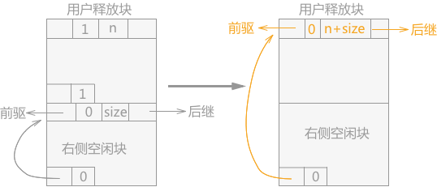
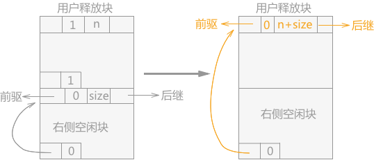

边界标识法管理动态内存
本节介绍一种解决系统中内存碎片过多而无法使用的方法——边界标识法。
在使用边界标识法的系统管理内存时，可利用空间表中的结点的构成如图 1：

图 1 结构构成
每个结点中包含 3 个区域，head 域、foot 域 和 space 域：
所以，边界标识法管理的内存块结点的代码表示为：
通过以上介绍的结点结构构建的可利用空间表中，任何一个结点都可以作为该链表的头结点（用 pav 表示头结点），当头结点为 NULL 时，即可利用空间表为空，无法继续分配空间。
分配算法的具体实现代码为（采用首部拟合法）
合并空闲块有 3 种情况：
如果当前空闲块的左右两侧都不是空闲块，而是占用块，此种情况下只需要将新的空闲块按照相应的规则（头部拟合法随意插入，其它两种方法在对应位置插入）插入到可利用空间表中即可。实现代码为：

图 2 空闲块合并（当前块，左侧内存块）
实现代码为：

图 3 空闲块合并（当前块、右侧内存块）
实现代码为：
如果当前用户释放掉的空闲块，物理位置上相邻的左右两侧的内存块全部为空闲块，需要将 3 个空闲块合并为一个更大的块，操作的过程为：更新左侧空闲块的 size 的值，同时在可利用空间表中摘除右侧空闲块，最后更新合并后的大的空闲块的 foot 域。
在使用边界标识法的系统管理内存时，可利用空间表中的结点的构成如图 1：
图 1 结构构成
每个结点中包含 3 个区域，head 域、foot 域 和 space 域：
- space 域表示为该内存块的大小，它的大小通过 head 域中的 size 值表示。
- head 域中包含有 4 部分：llink 和 rlink 分别表示指向当前内存块结点的直接前驱和直接后继。tag 值用于标记当前内存块的状态，是占用块（用 1 表示）还是空闲块（用 0 表示）。size 用于记录该内存块的存储大小。
- foot 域中包含有 2 部分：uplink 是指针域，用于指向内存块本身，通过 uplink 就可以获取该内存块所在内存的首地址。tag 同 head 域中的 tag 相同，都是记录内存块状态的。
注意：head 域和 foot 域在本节中都假设只占用当前存储块的 1 个存储单位的空间，对于该结点整个存储空间来说，可以忽略不计。也就是说，在可利用空间表中，知道下一个结点的首地址，该值减 1 就可以找到当前结点的 foot 域。
使用边界标识法的可利用空间表本身是双向循环链表，每个内存块结点都有指向前驱和后继结点的指针域。
所以，边界标识法管理的内存块结点的代码表示为：
typedef struct WORD{
union{
struct WORD *llink;//指向直接前驱
struct WORD *uplink;//指向结点本身
};
int tag;//标记域,0表示为空闲块；1表示为占用块
int size;//记录内存块的存储大小
struct WORD *rlink;//指向直接后继
OtherType other;//内存块可能包含的其它的部分
}WORD,head,foot,*Space;
通过以上介绍的结点结构构建的可利用空间表中，任何一个结点都可以作为该链表的头结点（用 pav 表示头结点），当头结点为 NULL 时，即可利用空间表为空，无法继续分配空间。
分配算法
当用户申请空间时，系统可以采用 3 种分配方法中的任何一种。但在不断地分配的过程中，会产生一些容量极小以至无法利用的空闲块，这些不断生成的小内存块就会减慢遍历分配的速度。针对这种情况，解决的措施是：3 种分配方法分别为：首部拟合法、最佳拟合法和最差拟合法。
- 选定一个常量 e，每次分配空间时，判断当前内存块向用户分配空间后，如果剩余部分的容量比 e 小，则将整个内存块全部分配给用户。
- 采用头部拟合法进行分配时，如果每次都从 pav 指向的结点开始遍历，在若干次后，会出现存储量小的结点密集地分布在 pav 结点附近的情况，严重影响遍历的时间。解决办法就是：在每次分配空间后，让 pav 指针指向该分配空间结点的后继结点，然后从新的 pav 指向的结点开始下一次的分配。
分配算法的具体实现代码为（采用首部拟合法）
Space AllocBoundTag(Space *pav,int n){
Space p,f;
int e=10;//设定常亮 e 的值
//如果在遍历过程，当前空闲块的在存储容量比用户申请空间 n 值小，在该空闲块有右孩子的情况下直接跳过
for (p=(*pav); p&&p->size<n&&p->rlink!=(*pav); p=p->rlink);
//跳出循环，首先排除p为空和p指向的空闲块容量小于 n 的情况
if (!p ||p->size<n) {
return NULL;
}else{
//指针f指向p空闲块的foot域
f=FootLoc(p);
//调整pav指针的位置，为下次分配做准备
(*pav)=p->rlink;
//如果该空闲块的存储大小比 n 大，比 n+e 小，负责第一种情况，将 p 指向的空闲块全部分配给用户
if (p->size-n <= e) {
if ((*pav)==p) {
pav=NULL;
}
else{
//全部分配用户，即从可利用空间表中删除 p 空闲块
(*pav)->llink=p->llink;
p->llink->rlink=(*pav);
}
//同时调整head域和foot域中的tag值
p->tag=f->tag=1;
}
//否则，从p空闲块中拿出 大小为 n 的连续空间分配给用户，同时更新p剩余存储块中的信息。
else{
//更改分配块foot域的信息
f->tag=1;
p->size-=n;
//f指针指向剩余空闲块 p 的底部
f=FootLoc(p);
f->tag=0; f->uplink=p;
p=f+1;//p指向的是分配给用户的块的head域，也就是该块的首地址
p->tag=1; p->size=n;
}
return p;
}
}
回收算法
在用户活动完成，系统需要立即回收被用户占用的存储空间，以备新的用户使用。回收算法中需要解决的问题是：在若干次分配操作后，可利用空间块中会产生很多存储空间很小以致无法使用的空闲块。但是经过回收用户释放的空间后，可利用空间表中可能含有地址相邻的空闲块，回收算法需要将这些地址相邻的空闲块合并为大的空闲块供新的用户使用。合并空闲块有 3 种情况：
- 该空闲块的左边有相邻的空闲块可以进行合并；
- 该空闲块的右边用相邻的空闲块可以进行合并；
- 该空闲块的左右两侧都有相邻的空闲块可以进行合并；
判断当前空闲块左右两侧是否为空闲块的方法是：对于当前空闲块 p ，p-1 就是相邻的低地址处的空闲块的 foot 域，如果 foot 域中的 tag 值为 0 ，表明其为空闲块； p+p->size 表示的是高地址处的块的 head 域，如果 head 域中的 tag 值为 0，表明其为空闲块。
如果当前空闲块的左右两侧都不是空闲块，而是占用块，此种情况下只需要将新的空闲块按照相应的规则（头部拟合法随意插入，其它两种方法在对应位置插入）插入到可利用空间表中即可。实现代码为：
//设定p指针指向的为用户释放的空闲块 p->tag=0; //f指针指向p空闲块的foot域 Space f=FootLoc(p); f->uplink=p; f->tag=0; //如果pav指针不存在，证明可利用空间表为空，此时设置p为头指针，并重新建立双向循环链表 if (!pav) { pav=p->llink=p->rlink=p; }else{ //否则，在p空闲块插入到pav指向的空闲块的左侧 Space q=pav->llink; p->rlink=pav; p->llink=q; q->rlink=pav->llink=p; pav=p; }如果该空闲块的左侧相邻的块为空闲块，右侧为占用块，处理的方法是：只需要更改左侧空闲块中的 size 的大小，并重新设置左侧空闲块的 foot 域即可（如图 2）。
图 2 空闲块合并（当前块，左侧内存块）
实现代码为：
//常量 n 表示当前空闲块的存储大小 int n=p->size; Space s=(p-1)->uplink;//p-1 为当前块的左侧块的foot域，foot域中的uplink指向的就是左侧块的首地址，s指针代表的是当前块的左侧存储块 s->size+=n;//设置左侧存储块的存储容量 Space f=p+n-1;//f指针指向的是空闲块 p 的foot域 f->uplink=s;//这是foot域的uplink指针重新指向合并后的存储空间的首地址 f->tag=0;//设置foot域的tag标记为空闲块如果用户释放的内存块的相邻左侧为占用块，右侧为空闲块，处理的方法为：将用户释放掉的存储块替换掉右侧的空闲块，同时更改存储块的 size 和右侧空闲块的 uplink 指针的指向（如图 3 所示）。

图 3 空闲块合并（当前块、右侧内存块）
实现代码为：
Space t=p+p->size;//t指针指向右侧空闲块的首地址 p->tag=0;//初始化head域的tag值为0 //找到t右侧空闲块的前驱结点和后继结点，用当前释放的空闲块替换右侧空闲块 Space q=t->llink; p->llink=q; q->rlink=p; Space q1=t->rlink; p->rlink=q1; q1->llink=p; //更新释放块的size的值 p->size+=t->size; //更改合并后的foot域的uplink指针的指向 Space f=FootLoc(t); f->uplink=p;
如果当前用户释放掉的空闲块，物理位置上相邻的左右两侧的内存块全部为空闲块，需要将 3 个空闲块合并为一个更大的块，操作的过程为：更新左侧空闲块的 size 的值，同时在可利用空间表中摘除右侧空闲块，最后更新合并后的大的空闲块的 foot 域。
实现代码为：此情况和只有左侧有空闲块的情况雷同，唯一的不同点是多了一步摘除右侧相邻空闲块结点的操作。
int n=p->size; Space s=(p-1)->uplink;//找到释放内存块物理位置相邻的低地址的空闲块 Space t=p+p->size;//找到物理位置相邻的高地址处的空闲块 s->size+=n+t->size;//更新左侧空闲块的size的值 //从可利用空间表中摘除右侧空闲块 Space q=t->llink; Space q1=t->rlink; q->rlink=q1; q1->llink=q; //更新合并后的空闲块的uplink指针的指向 Space f=FootLoc(t); f->uplink=s;
关注公众号「站长严长生」，在手机上阅读所有教程，随时随地都能学习。内含一款搜索神器，免费下载全网书籍和视频。

微信扫码关注公众号